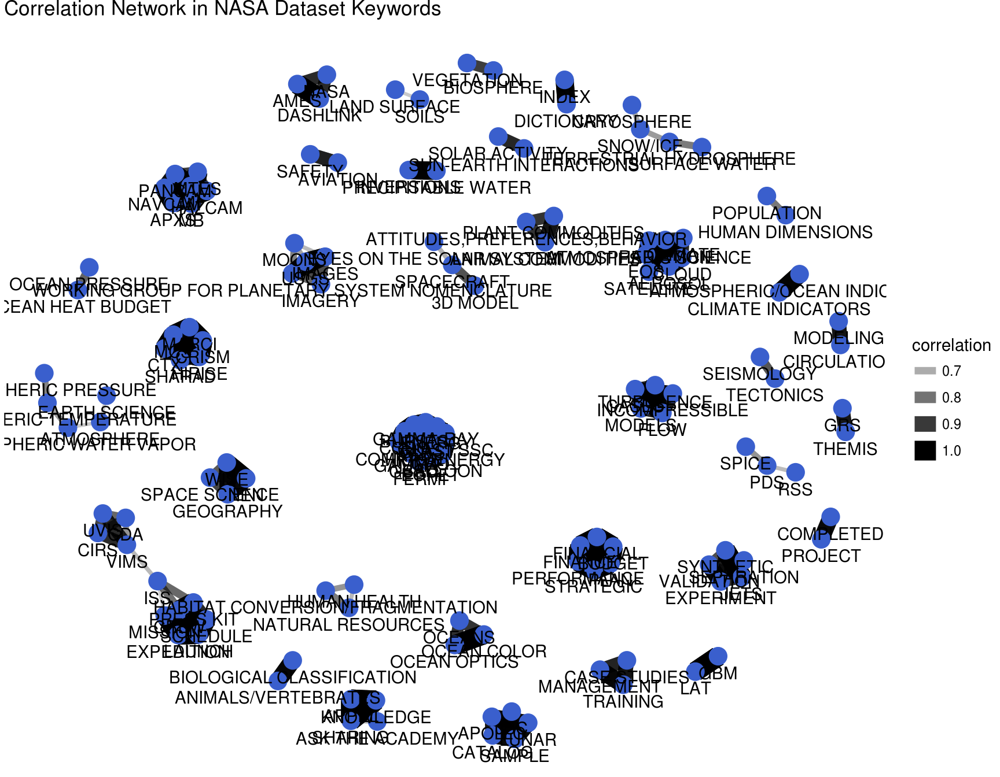
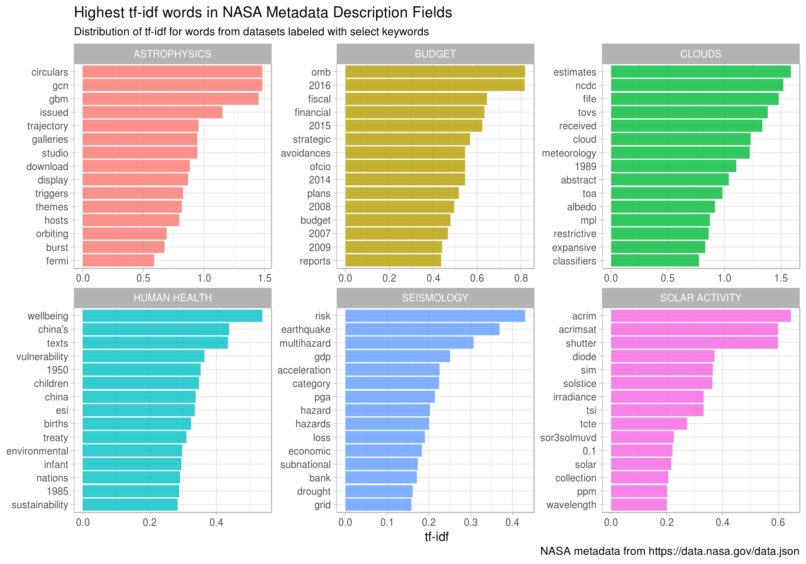
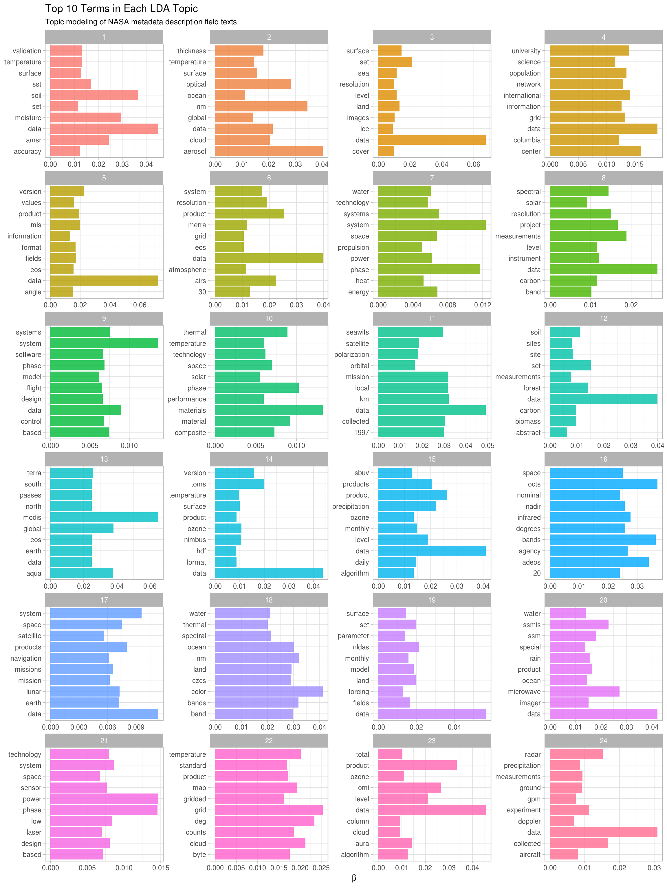
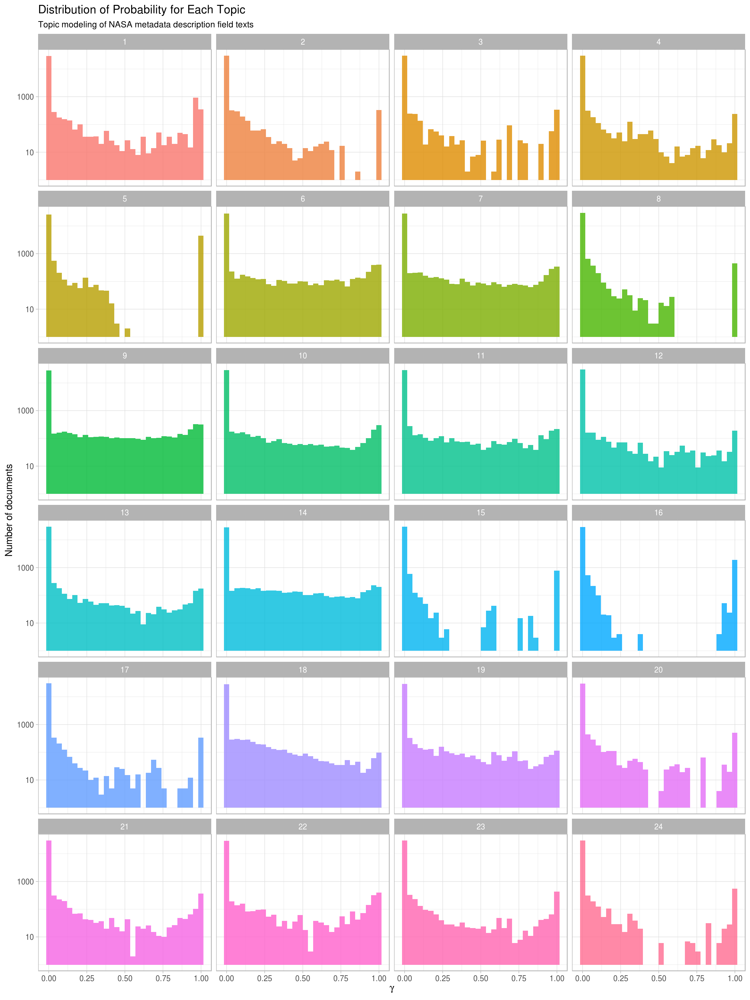
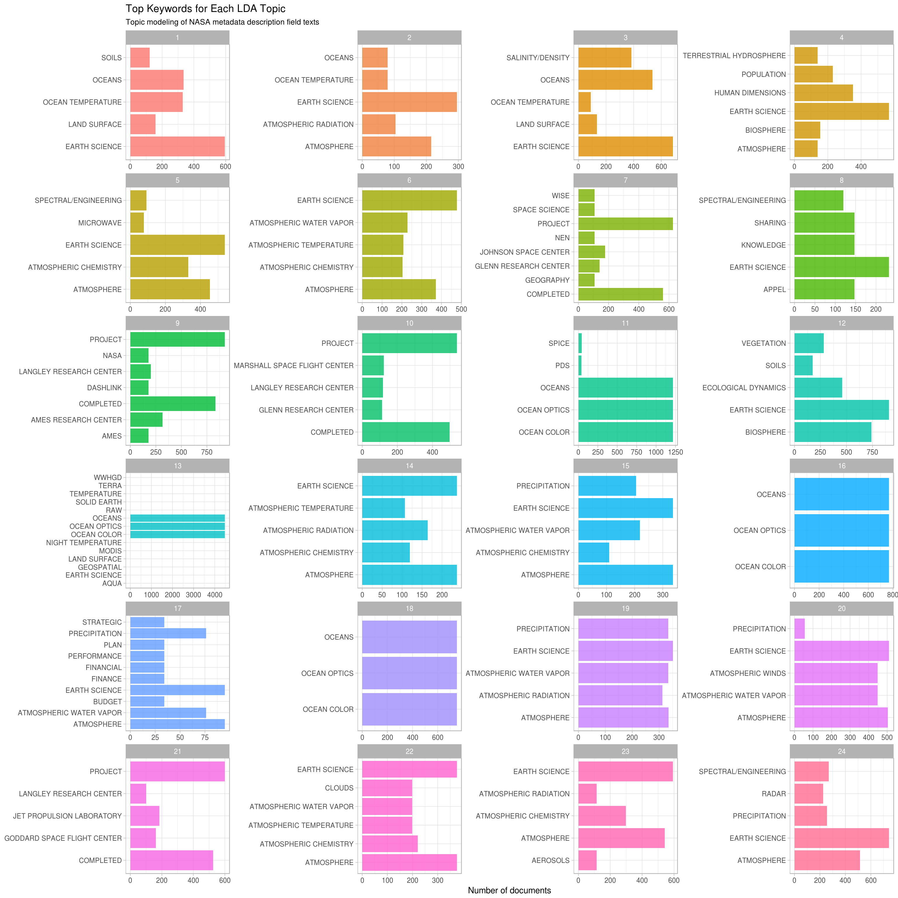

9 Case study: mining NASA metadata
There are 32,000+ datasets at NASA, and we can use the metadata for these datasets to understand the connections between them. What is metadata? Metadata is data that gives information about other data, in this case, data about what is in these numerous NASA datasets (but not the datasets themselves). It includes information like the title of the dataset, description fields, what organization(s) within NASA is responsible for the dataset, keywords for the dataset that have been assigned by a human being, and so forth. NASA places a high priority on making its data accessible, even requiring all NASA-funded research to be openly accessible online, and the metadata for all its datasets is publicly available online in JSON format.
In this chapter, we will treat the NASA metadata as a text dataset and show how to implement several tidy text approaches with this real-life text. We will use word co-occurrences and correlations, tf-idf, and topic modeling. Since we have several text fields in the NASA metadata, most importantly the title, description, and keyword fields, we can explore the connections between the fields to better understand the complex world of data at NASA. This type of approach can be extended to many domains, so let’s take a look at this metadata and get started.
9.1 Getting the metadata
First, let’s download the JSON file and take a look at the names.
library(jsonlite)
metadata <- fromJSON("https://data.nasa.gov/data.json")
names(metadata$dataset)## [1] "_id" "@type" "accessLevel" "accrualPeriodicity"
## [5] "bureauCode" "contactPoint" "description" "distribution"
## [9] "identifier" "issued" "keyword" "landingPage"
## [13] "language" "modified" "programCode" "publisher"
## [17] "spatial" "temporal" "theme" "title"
## [21] "license" "isPartOf" "references" "rights"
## [25] "describedBy"What kind of data is available here?
sapply(metadata$dataset, class)## _id @type accessLevel accrualPeriodicity bureauCode
## "data.frame" "character" "character" "character" "list"
## contactPoint description distribution identifier issued
## "data.frame" "character" "list" "character" "character"
## keyword landingPage language modified programCode
## "list" "character" "list" "character" "list"
## publisher spatial temporal theme title
## "data.frame" "character" "character" "list" "character"
## license isPartOf references rights describedBy
## "character" "character" "list" "character" "character"It seems likely that the title, description, and keywords for each dataset may be most fruitful for drawing connections between datasets. It’s a place to start anyway! Let’s check them out.
class(metadata$dataset$title)## [1] "character"class(metadata$dataset$description)## [1] "character"class(metadata$dataset$keyword)## [1] "list"9.2 Wrangling and tidying the data
Let’s set up tidy data frames for title, description, and keyword and keep the dataset ids.
library(dplyr)
nasa_title <- data_frame(id = metadata$dataset$`_id`$`$oid`,
title = metadata$dataset$title)
nasa_title## # A tibble: 32,089 × 2
## id title
## <chr> <chr>
## 1 55942a57c63a7fe59b495a77 15 Minute Stream Flow Data: USGS (FIFE)
## 2 55942a57c63a7fe59b495a78 15 Minute Stream Flow Data: USGS (FIFE)
## 3 55942a58c63a7fe59b495a79 15 Minute Stream Flow Data: USGS (FIFE)
## 4 55942a58c63a7fe59b495a7a 2000 Pilot Environmental Sustainability Index (ESI)
## 5 55942a58c63a7fe59b495a7b 2000 Pilot Environmental Sustainability Index (ESI)
## 6 55942a58c63a7fe59b495a7c 2000 Pilot Environmental Sustainability Index (ESI)
## 7 55942a58c63a7fe59b495a7d 2001 Environmental Sustainability Index (ESI)
## 8 55942a58c63a7fe59b495a7e 2001 Environmental Sustainability Index (ESI)
## 9 55942a58c63a7fe59b495a7f 2001 Environmental Sustainability Index (ESI)
## 10 55942a58c63a7fe59b495a80 2001 Environmental Sustainability Index (ESI)
## # ... with 32,079 more rowsnasa_desc <- data_frame(id = metadata$dataset$`_id`$`$oid`,
desc = metadata$dataset$description)
nasa_desc## # A tibble: 32,089 × 2
## id
## <chr>
## 1 55942a57c63a7fe59b495a77
## 2 55942a57c63a7fe59b495a78
## 3 55942a58c63a7fe59b495a79
## 4 55942a58c63a7fe59b495a7a
## 5 55942a58c63a7fe59b495a7b
## 6 55942a58c63a7fe59b495a7c
## 7 55942a58c63a7fe59b495a7d
## 8 55942a58c63a7fe59b495a7e
## 9 55942a58c63a7fe59b495a7f
## 10 55942a58c63a7fe59b495a80
## # ... with 32,079 more rows, and 1 more variables: desc <chr>These are having a hard time printing out; let’s print out part of a few.
nasa_desc %>%
select(desc) %>%
sample_n(5)## # A tibble: 5 × 1
## desc
## <chr>
## 1 This SBIR Phase I effort proposes to establish the feasibility of developing a UV Planar Lightwave C
## 2 This dataset consists of VHS tapes which record the forward and nadir views from the NASA DC-8 aircr
## 3 MODIS (or Moderate Resolution Imaging Spectroradiometer) is a key instrument aboard the\nTerra (EOS A
## 4 The Coastal Zone Color Scanner Experiment (CZCS) was the first instrument devoted to the measurement
## 5 The SeaWiFS instrument was launched by Orbital Sciences Corporation on the OrbView-2\n(a.k.a. SeaStarNow we can do the keywords, which must be unnested since they are in a list-column.
library(tidyr)
nasa_keyword <- data_frame(id = metadata$dataset$`_id`$`$oid`,
keyword = metadata$dataset$keyword) %>%
unnest(keyword)
nasa_keyword## # A tibble: 126,814 × 2
## id keyword
## <chr> <chr>
## 1 55942a57c63a7fe59b495a77 EARTH SCIENCE
## 2 55942a57c63a7fe59b495a77 HYDROSPHERE
## 3 55942a57c63a7fe59b495a77 SURFACE WATER
## 4 55942a57c63a7fe59b495a78 EARTH SCIENCE
## 5 55942a57c63a7fe59b495a78 HYDROSPHERE
## 6 55942a57c63a7fe59b495a78 SURFACE WATER
## 7 55942a58c63a7fe59b495a79 EARTH SCIENCE
## 8 55942a58c63a7fe59b495a79 HYDROSPHERE
## 9 55942a58c63a7fe59b495a79 SURFACE WATER
## 10 55942a58c63a7fe59b495a7a EARTH SCIENCE
## # ... with 126,804 more rowsNow let’s use tidytext’s unnest_tokens for the title and description fields so we can do the text analysis. Let’s also remove common English words.
library(tidytext)
nasa_title <- nasa_title %>%
unnest_tokens(word, title) %>%
anti_join(stop_words)
nasa_desc <- nasa_desc %>%
unnest_tokens(word, desc) %>%
anti_join(stop_words)9.3 Some initial simple exploration
What are the most common words in the NASA dataset titles?
nasa_title %>%
count(word, sort = TRUE)## # A tibble: 11,614 × 2
## word n
## <chr> <int>
## 1 project 7735
## 2 data 3354
## 3 1 2841
## 4 level 2400
## 5 global 1809
## 6 v1 1478
## 7 daily 1397
## 8 3 1364
## 9 aura 1363
## 10 l2 1311
## # ... with 11,604 more rowsWhat about the descriptions?
nasa_desc %>%
count(word, sort = TRUE)## # A tibble: 35,940 × 2
## word n
## <chr> <int>
## 1 data 68871
## 2 modis 24420
## 3 global 23028
## 4 2 16599
## 5 1 15770
## 6 system 15480
## 7 product 14780
## 8 aqua 14738
## 9 earth 14373
## 10 resolution 13879
## # ... with 35,930 more rowsIt looks like we might want to remove digits and some “words” like “v1” from these dataframes before approaching something more meaningful like topic modeling.
my_stopwords <- data_frame(word = c(as.character(1:10),
"v1", "v03", "l2", "l3", "v5.2.0",
"v003", "v004", "v005", "v006"))
nasa_title <- nasa_title %>%
anti_join(my_stopwords)
nasa_desc <- nasa_desc %>%
anti_join(my_stopwords)What are the most common keywords?
nasa_keyword %>%
group_by(keyword) %>%
count(sort = TRUE)## # A tibble: 1,774 × 2
## keyword n
## <chr> <int>
## 1 EARTH SCIENCE 14362
## 2 Project 7452
## 3 ATMOSPHERE 7321
## 4 Ocean Color 7268
## 5 Ocean Optics 7268
## 6 Oceans 7268
## 7 completed 6452
## 8 ATMOSPHERIC WATER VAPOR 3142
## 9 OCEANS 2765
## 10 LAND SURFACE 2720
## # ... with 1,764 more rowsIt is possible that “Project completed” may not be a useful set of keywords to keep around for some purposes, and we may want to change all of these to lower or upper case to get rid of duplicates like “OCEANS” and “Oceans”. Let’s do that, actually.
nasa_keyword <- nasa_keyword %>%
mutate(keyword = toupper(keyword))9.4 Word co-ocurrences and correlations
Let’s examine which words commonly occur together in the titles and descriptions of NASA datasets. We can then examine a word network in titles/descriptions; this may help us decide, for example, how many topics to look at in topic modeling.
library(widyr)
title_words <- nasa_title %>%
pairwise_count(word, id, sort = TRUE)
title_words## # A tibble: 313,774 × 3
## item1 item2 n
## <chr> <chr> <dbl>
## 1 project system 796
## 2 system project 796
## 3 eco lba 683
## 4 lba eco 683
## 5 aqua airs 641
## 6 airs aqua 641
## 7 aqua level 623
## 8 level aqua 623
## 9 airs level 612
## 10 level airs 612
## # ... with 313,764 more rowsdesc_words <- nasa_desc %>%
pairwise_count(word, id, sort = TRUE)
desc_words## # A tibble: 21,779,288 × 3
## item1 item2 n
## <chr> <chr> <dbl>
## 1 global data 9864
## 2 data global 9864
## 3 resolution data 9302
## 4 data resolution 9302
## 5 resolution instrument 8189
## 6 instrument resolution 8189
## 7 surface data 8180
## 8 data surface 8180
## 9 resolution global 8139
## 10 global resolution 8139
## # ... with 21,779,278 more rowsLet’s plot networks of these co-occurring words.
library(ggplot2)
library(igraph)
library(ggraph)
set.seed(1234)
title_words %>%
filter(n >= 250) %>%
graph_from_data_frame() %>%
ggraph(layout = "fr") +
geom_edge_link(aes(edge_alpha = n, edge_width = n)) +
geom_node_point(color = "darkslategray4", size = 5) +
geom_node_text(aes(label = name), repel = TRUE) +
ggtitle("Word Network in NASA Dataset Titles") +
theme_void()
This is a good start, although it looks like there may still a bit more cleaning to be done.
Let’s look at the words in descriptions.
set.seed(1234)
desc_words %>%
filter(n >= 5000) %>%
graph_from_data_frame() %>%
ggraph(layout = "fr") +
geom_edge_link(aes(edge_alpha = n, edge_width = n)) +
geom_node_point(color = "indianred4", size = 5) +
geom_node_text(aes(label = name), repel = TRUE) +
ggtitle("Word Network in NASA Dataset Descriptions") +
theme_void()
Here there are such strong connections between the top dozen or so words (words like “data”, “resolution”, and “instrument”) that we may do better if we exclude these very highly connected words or use tf-idf (as described in detail in Chapter 4) as a metric. But for now, let’s add a few more stop words and look at one more word network for the description fields. Notice how we use bind_rows to add more custom stop words to the words we are already using; this approach can be used in many instances.
my_stopwords <- bind_rows(my_stopwords,
data_frame(word = c("data", "global",
"instrument", "resolution",
"product", "level")))
set.seed(1234)
nasa_desc %>%
anti_join(my_stopwords) %>%
pairwise_count(word, id, sort = TRUE) %>%
filter(n >= 4600) %>%
graph_from_data_frame() %>%
ggraph(layout = "fr") +
geom_edge_link(aes(edge_alpha = n, edge_width = n)) +
geom_node_point(color = "indianred4", size = 5) +
geom_node_text(aes(label = name), repel = TRUE) +
ggtitle("Word Network in NASA Dataset Descriptions") +
theme_void()
We still are not seeing clusters the way we did with the titles (the descriptions appear to use very similar words compared to each other), so using tf-idf may be a better way to go when approaching the description fields.
Let’s make a network of the keywords to see which keywords commonly occur together in the same datasets.
keyword_counts <- nasa_keyword %>%
pairwise_count(keyword, id, sort = TRUE)
keyword_counts## # A tibble: 26,780 × 3
## item1 item2 n
## <chr> <chr> <dbl>
## 1 OCEAN OPTICS OCEANS 7324
## 2 OCEANS OCEAN OPTICS 7324
## 3 ATMOSPHERE EARTH SCIENCE 7318
## 4 EARTH SCIENCE ATMOSPHERE 7318
## 5 OCEAN COLOR OCEANS 7270
## 6 OCEAN COLOR OCEAN OPTICS 7270
## 7 OCEANS OCEAN COLOR 7270
## 8 OCEAN OPTICS OCEAN COLOR 7270
## 9 COMPLETED PROJECT 6450
## 10 PROJECT COMPLETED 6450
## # ... with 26,770 more rowsset.seed(1234)
keyword_counts %>%
filter(n >= 700) %>%
graph_from_data_frame() %>%
ggraph(layout = "fr") +
geom_edge_link(aes(edge_alpha = n, edge_width = n)) +
geom_node_point(color = "royalblue3", size = 5) +
geom_node_text(aes(label = name), repel = TRUE) +
ggtitle("Co-occurrence Network in NASA Dataset Keywords") +
theme_void()
These are the most commonly co-occurring words, but also just the most common keywords in general. To more meaningfully examine which keywords are likely to appear together instead of separately, we need to find the correlation among the keywords as described in Chapter 5.
keyword_cors <- nasa_keyword %>%
group_by(keyword) %>%
filter(n() >= 50) %>%
pairwise_cor(keyword, id, sort = TRUE)
keyword_cors## # A tibble: 15,750 × 3
## item1 item2 correlation
## <chr> <chr> <dbl>
## 1 SHARING KNOWLEDGE 1.0000000
## 2 KNOWLEDGE SHARING 1.0000000
## 3 AMES DASHLINK 1.0000000
## 4 DASHLINK AMES 1.0000000
## 5 EXPEDITION SCHEDULE 1.0000000
## 6 SCHEDULE EXPEDITION 1.0000000
## 7 MODELS TURBULENCE 0.9971871
## 8 TURBULENCE MODELS 0.9971871
## 9 KNOWLEDGE APPEL 0.9967945
## 10 SHARING APPEL 0.9967945
## # ... with 15,740 more rowsNotice that these keywords at the top of this sorted data frame have correlation coefficients equal to 1; they always occur together. This means these are redundant keywords and it may not make sense to continue to use both of these sets of pairs. Let’s visualize the network of keyword correlations, just as we did for keyword co-occurences.
set.seed(1234)
keyword_cors %>%
filter(correlation > .6) %>%
graph_from_data_frame() %>%
ggraph(layout = "fr") +
geom_edge_link(aes(edge_alpha = correlation, edge_width = correlation)) +
geom_node_point(color = "royalblue3", size = 5) +
geom_node_text(aes(label = name), repel = TRUE) +
ggtitle("Correlation Network in NASA Dataset Keywords") +
theme_void()
This network looks much different than the co-occurence network. The difference is that the co-occurrence network asks a question about which keyword pairs occur most often, and the correlation network asks a question about which keyword pairs occur more often together than with other keywords. Notice here the high number of small clusters of keywords; the network structure can be extracted from the graph_from_data_frame() function above.
9.5 Calculating tf-idf for the description fields
As discussed in Chapter 4, we can use tf-idf, the term frequency times inverse document frequency, to identify words that are especially important to a document within a collection of documents. Let’s apply that approach to the description fields of these NASA datasets. We will consider each description field a document, and the whole set of description fields the collection or corpus of documents. We have already used unnest_tokens above to make a tidy data frame of the words in the description fields, so now we can use bind_tf_idf to calculate tf-idf for each word.
desc_tf_idf <- nasa_desc %>%
count(id, word, sort = TRUE) %>%
ungroup() %>%
bind_tf_idf(word, id, n)What are the highest tf-idf words in the NASA description fields?
desc_tf_idf %>%
arrange(-tf_idf)## # A tibble: 1,913,349 × 6
## id word n tf idf
## <chr> <chr> <int> <dbl> <dbl>
## 1 55942a7cc63a7fe59b49774a rdr 1 1 10.375052
## 2 55942ac9c63a7fe59b49b688 palsar_radiometric_terrain_corrected_high_res 1 1 10.375052
## 3 55942ac9c63a7fe59b49b689 palsar_radiometric_terrain_corrected_low_res 1 1 10.375052
## 4 55942a7bc63a7fe59b4976ca lgrs 1 1 8.765615
## 5 55942a7bc63a7fe59b4976d2 lgrs 1 1 8.765615
## 6 55942a7bc63a7fe59b4976e3 lgrs 1 1 8.765615
## 7 55942a7dc63a7fe59b497820 mri 1 1 8.583293
## 8 55942ad8c63a7fe59b49cf6c template_proddescription 1 1 8.295611
## 9 55942ad8c63a7fe59b49cf6d template_proddescription 1 1 8.295611
## 10 55942ad8c63a7fe59b49cf6e template_proddescription 1 1 8.295611
## # ... with 1,913,339 more rows, and 1 more variables: tf_idf <dbl>These are the most important words in the description fields as measured by tf-idf, meaning they are common but not too common. Notice we have run into an issue here; both \(n\) and term frequency are equal to 1 for these terms, meaning that these were description fields that only had a single word in them. If a description field only contains one word, the tf-idf algorithm will think that is a really important word. Depending on our analytic goals, it might be a good idea to throw out all description fields that have fewer than 5 words or similar.
We now know which words in the descriptions have high tf-idf, and we also have labels for these descriptions in the keywords. Let’s do a full join of the keyword data frame and the data frame of description words with tf-idf, and then find the highest tf-idf words for a given keyword.
desc_tf_idf <- full_join(desc_tf_idf, nasa_keyword, by = "id")Let’s plot some of the most important words, as measured by tf-idf, for a few example keywords used on NASA datasets. First, let’s use dplyr operations to filter for the keywords we want to examine and take just the top 15 words for each keyword. Then, let’s plot those words.
desc_tf_idf %>%
filter(!near(tf, 1)) %>%
filter(keyword %in% c("SOLAR ACTIVITY", "CLOUDS",
"SEISMOLOGY", "ASTROPHYSICS",
"HUMAN HEALTH", "BUDGET")) %>%
arrange(desc(tf_idf)) %>%
group_by(keyword) %>%
distinct(word, keyword, .keep_all = TRUE) %>%
top_n(15, tf_idf) %>%
ungroup() %>%
mutate(word = factor(word, levels = rev(unique(word)))) %>%
ggplot(aes(word, tf_idf, fill = keyword)) +
geom_bar(stat = "identity", alpha = 0.8, show.legend = FALSE) +
facet_wrap(~keyword, ncol = 3, scales = "free") +
coord_flip() +
labs(title = "Highest tf-idf words in NASA Metadata Description Fields",
subtitle = "Distribution of tf-idf for words from datasets labeled with select keywords",
caption = "NASA metadata from https://data.nasa.gov/data.json",
x = NULL, y = "tf-idf")
Using tf-idf has allowed us to identify important description words for each of these keywords. Datasets labeled with the keyword SEISMOLOGY have words like “earthquake”, “risk”, and “hazard” in their description, while those labeled with HUMAN HEALTH have descriptions characterized by words like “wellbeing”, “vulnerability”, and “children.” Most of the combinations of letters that are not English words are certainly acronyms (like OMB for the Office of Management and Budget), and the examples of years and numbers are important for these topics. The tf-idf statistic has identified the kinds of words it is intended to, important words for individual documents within a collection of documents.
9.6 Topic modeling
Let’s try another approach to the question of what the NASA descriptions fields are about. We can use topic modeling as described in Chapter 7 to model each document (description field) as a mixture of topics and each topic as a mixture of words. As in earlier chapters, we will use latent Dirichlet allocation (LDA) for our topic modeling; there are other possible approaches for topic modeling.
To do the topic modeling as implemented here, we need to make a DocumentTermMatrix, a special kind of matrix from the tm package (of course, this is just a specific implementation of the general concept of a “document-term matrix”). Rows correspond to documents (description texts in our case) and columns correspond to terms (i.e., words); it is a sparse matrix and the values are word counts.
Let’s clean up the text a bit using stop words to remove some of the nonsense “words” leftover from HTML or other character encoding.
my_stop_words <- bind_rows(stop_words,
data_frame(word = c("nbsp", "amp", "gt", "lt",
"timesnewromanpsmt", "font",
"td", "li", "br", "tr", "quot",
"st", "img", "src", "strong",
as.character(1:10)),
lexicon = rep("custom", 25)))
word_counts <- nasa_desc %>%
anti_join(my_stop_words) %>%
count(id, word, sort = TRUE) %>%
ungroup()
word_counts## # A tibble: 1,908,138 × 3
## id word n
## <chr> <chr> <int>
## 1 55942a8ec63a7fe59b4986ef suit 82
## 2 55942a8ec63a7fe59b4986ef space 69
## 3 56cf5b00a759fdadc44e564a data 41
## 4 56cf5b00a759fdadc44e564a leak 40
## 5 56cf5b00a759fdadc44e564a tree 39
## 6 55942a8ec63a7fe59b4986ef pressure 34
## 7 55942a8ec63a7fe59b4986ef system 34
## 8 55942a89c63a7fe59b4982d9 em 32
## 9 55942a8ec63a7fe59b4986ef al 32
## 10 55942a8ec63a7fe59b4986ef human 31
## # ... with 1,908,128 more rowsThis is the information we need, the number of times each word is used in each document, to make a DocumentTermMatrix. We can cast from our tidy text format to this non-tidy format as described in detail in Chapter 6.
desc_dtm <- word_counts %>%
cast_dtm(id, word, n)
desc_dtm## <<DocumentTermMatrix (documents: 32003, terms: 35908)>>
## Non-/sparse entries: 1908138/1147255586
## Sparsity : 100%
## Maximal term length: 166
## Weighting : term frequency (tf)We see that this dataset contains documents (each of them a NASA description field) and terms (words). Notice that this example document-term matrix is (nearly) 100% sparse.
Now let’s use the topicmodels package to create an LDA model. How many topics will we tell the algorithm to make? This is a question much like in \(k\)-means clustering; we don’t really know ahead of time. We tried this modeling procedure using 8, 16, 24, 32, and 64 topics; we found that at 24 topics, documents were still getting sorted into topics cleanly but going much beyond that caused the distributions of \(\gamma\), the probability that each document belongs in each topic, to look worrisome. We will show more details on this below.
library(topicmodels)
desc_lda <- LDA(desc_dtm, k = 24, control = list(seed = 1234))
desc_lda## A LDA_VEM topic model with 24 topics.This is a stochastic algorithm that could have different results depending on where the algorithm starts, so we need to specify a seed for reproducibility.
9.7 Interpreting the topic model
Now that we have built the model, let’s tidy the results of the model. The tidytext package includes a tidying method for LDA models from the topicmodels package.
tidy_lda <- tidy(desc_lda)
tidy_lda## # A tibble: 861,792 × 3
## topic term beta
## <int> <chr> <dbl>
## 1 1 suit 1.504577e-62
## 2 2 suit 3.453300e-63
## 3 3 suit 6.482644e-100
## 4 4 suit 2.237356e-84
## 5 5 suit 5.824520e-112
## 6 6 suit 1.253670e-72
## 7 7 suit 1.327232e-03
## 8 8 suit 3.334593e-124
## 9 9 suit 3.649836e-09
## 10 10 suit 4.879224e-21
## # ... with 861,782 more rowsThe column \(\beta\) tells us the probability of that term being generated from that topic for that document. Notice that some of very, very low, and some are not so low.
What are the top 5 terms for each topic?
top_terms <- tidy_lda %>%
group_by(topic) %>%
top_n(10, beta) %>%
ungroup() %>%
arrange(topic, -beta)
top_terms## # A tibble: 240 × 3
## topic term beta
## <int> <chr> <dbl>
## 1 1 data 0.03849671
## 2 1 sea 0.02500301
## 3 1 surface 0.02457409
## 4 1 sst 0.02081033
## 5 1 temperature 0.01701900
## 6 1 level 0.01654994
## 7 1 avhrr 0.01221112
## 8 1 version 0.01176028
## 9 1 product 0.01103262
## 10 1 ir 0.01056180
## # ... with 230 more rowsLet’s look at this visually.
ggplot(top_terms, aes(term, beta, fill = as.factor(topic))) +
geom_bar(stat = "identity", show.legend = FALSE, alpha = 0.8) +
coord_flip() +
labs(title = "Top 10 Terms in Each LDA Topic",
subtitle = "Topic modeling of NASA metadata description field texts",
x = NULL, y = expression(beta)) +
facet_wrap(~topic, ncol = 4, scales = "free")
We can see what a dominant word “data” is in these description texts. In addition, there are meaningful differences between these collections of terms, from terms about soil and biomass to terms about design, systems, and technology.
Next, let’s examine which topics are associated with which description fields (i.e., documents). We will look at a different probability for this, \(\gamma\), the probability that each document belongs in each topic.
lda_gamma <- tidy(desc_lda, matrix = "gamma")
lda_gamma## # A tibble: 768,072 × 3
## document topic gamma
## <chr> <int> <dbl>
## 1 55942a8ec63a7fe59b4986ef 1 6.282939e-06
## 2 56cf5b00a759fdadc44e564a 1 1.123270e-05
## 3 55942a89c63a7fe59b4982d9 1 3.587508e-05
## 4 56cf5b00a759fdadc44e55cd 1 2.195722e-05
## 5 55942a89c63a7fe59b4982c6 1 6.461393e-05
## 6 55942a86c63a7fe59b498077 1 5.539564e-05
## 7 56cf5b00a759fdadc44e56f8 1 4.607134e-05
## 8 55942a8bc63a7fe59b4984b5 1 4.211972e-05
## 9 55942a6ec63a7fe59b496bf7 1 4.098247e-05
## 10 55942a8ec63a7fe59b4986f6 1 2.813661e-05
## # ... with 768,062 more rowsNotice that these probabilites visible at the top of the data frame are quite low; some are higher, as we will see in a moment. Our model has assigned some probability to each description belonging to each of the topics we constructed from the sets of words. How are the probabilities distributed? Let’s visualize them.
ggplot(lda_gamma, aes(gamma, fill = as.factor(topic))) +
geom_histogram(show.legend = FALSE, alpha = 0.8) +
facet_wrap(~topic, ncol = 4) +
scale_y_log10() +
labs(title = "Distribution of Probability for Each Topic",
subtitle = "Topic modeling of NASA metadata description field texts",
y = "Number of documents", x = expression(gamma))
First notice that the y-axis is plotted on a log scale; otherwise it is difficult to make out any detail. Next, notice that \(\gamma\) runs from 0 to 1 in each panel and remember that this is the probability that a given document belongs in a given topic. There are many values near zero, which means there are many documents that do not belong in each topics. Also, most of these panels show a higher number of documents near \(\gamma = 1\); these are the documents that do belong in those topics. This is the type of information we used to choose how many topics to use in our topic modeling procedure. When we tried options higher than 24 (like 32 or 64), the distributions for \(\gamma\) started to look very flat; documents were not getting sorted into topics very well.
9.8 Connecting topic modeling with keywords
Let’s connect these topic models with the keywords and see what happens. We can join this dataframe to the human-tagged keywords and see which keywords are associated with which topic.
lda_gamma <- full_join(lda_gamma, nasa_keyword, by = c("document" = "id"))
lda_gamma## # A tibble: 3,037,671 × 4
## document topic gamma keyword
## <chr> <int> <dbl> <chr>
## 1 55942a8ec63a7fe59b4986ef 1 6.282939e-06 JOHNSON SPACE CENTER
## 2 55942a8ec63a7fe59b4986ef 1 6.282939e-06 PROJECT
## 3 55942a8ec63a7fe59b4986ef 1 6.282939e-06 COMPLETED
## 4 56cf5b00a759fdadc44e564a 1 1.123270e-05 DASHLINK
## 5 56cf5b00a759fdadc44e564a 1 1.123270e-05 AMES
## 6 56cf5b00a759fdadc44e564a 1 1.123270e-05 NASA
## 7 55942a89c63a7fe59b4982d9 1 3.587508e-05 GODDARD SPACE FLIGHT CENTER
## 8 55942a89c63a7fe59b4982d9 1 3.587508e-05 PROJECT
## 9 55942a89c63a7fe59b4982d9 1 3.587508e-05 COMPLETED
## 10 56cf5b00a759fdadc44e55cd 1 2.195722e-05 DASHLINK
## # ... with 3,037,661 more rowsNow we can use filter to keep only the document-topic entries that have probabilities greater than 0.9. After that, let’s find the top keywords for each topic.
top_keywords <- lda_gamma %>%
filter(gamma > 0.9) %>%
group_by(topic, keyword) %>%
count(keyword, sort = TRUE)
top_keywords## Source: local data frame [1,198 x 3]
## Groups: topic [24]
##
## topic keyword n
## <int> <chr> <int>
## 1 5 OCEAN COLOR 4480
## 2 5 OCEAN OPTICS 4480
## 3 5 OCEANS 4480
## 4 16 OCEAN COLOR 1968
## 5 16 OCEAN OPTICS 1968
## 6 16 OCEANS 1968
## 7 1 EARTH SCIENCE 1279
## 8 1 OCEANS 1277
## 9 6 EARTH SCIENCE 1057
## 10 9 PROJECT 905
## # ... with 1,188 more rowsWhat are the top keywords for each topic?
top_keywords %>%
top_n(10, n) %>%
ggplot(aes(keyword, n, fill = as.factor(topic))) +
geom_bar(stat = "identity", show.legend = FALSE, alpha = 0.8) +
labs(title = "Top Keywords for Each LDA Topic",
subtitle = "Topic modeling of NASA metadata description field texts",
x = NULL, y = "Number of documents") +
coord_flip() +
facet_wrap(~topic, ncol = 4, scales = "free")
Let’s take a step back and remind ourselves what this plot is telling us. NASA datasets are tagged with keywords by human beings, and we have built an LDA topic model (with 24 topics) for the description fields of the NASA datasets. This plot answers the question, “For the datasets that have description fields with a high probability of belonging to a given topic, what are the most common human-assigned keywords?”
It’s interesting that the keywords for topics 5, 15, and 16 are essentially duplicates of each other, because the top terms in those topics do exhibit meaningful differences. Also note that by number of documents, the combination of 5, 15, and 16 is quite a large percentage of the total number of datasets represented in this plot.